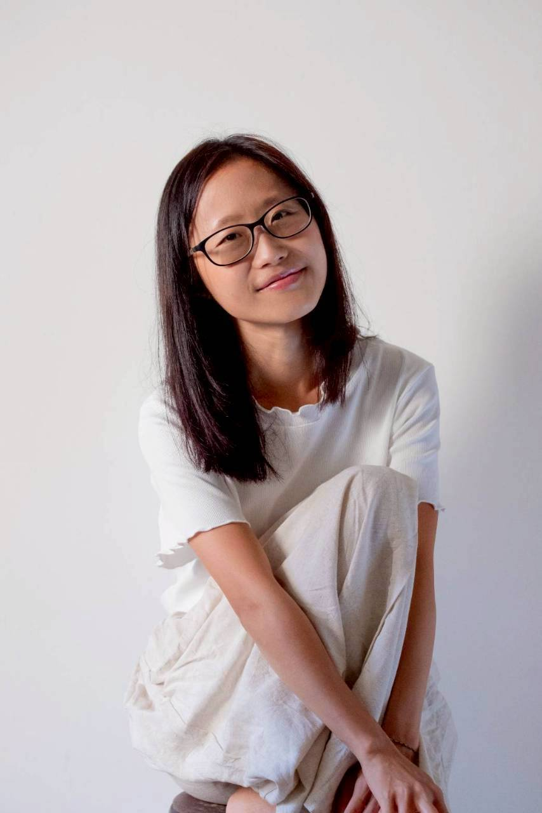

06
陪妳的人
Your Host
郁文 Yu-Wen
媽媽 · 女性支持活動「女子的市」發起人 · 溫柔生產陪產員 · 2026 年 Womb-Moon 神聖女人圈引導師結業 · IG @you_when_mama
「我是一個很敏銳細膩、很擅長自我覺察的人——例如，我能很清楚看見某個事情會牽起我的某種情緒。但同時，我也是個很容易自我批判的人：當我看見那些也許被大多數人稱為『負能量』的面向時，我便會批判自己擁有那些陰影。」
「相信有很多人跟我一樣，為了和諧、為了形象、又或是為了其他原因，而不由自主地批判自己、感到羞愧，甚至壓抑埋藏自己的陰影。願我們一起，在這個天蠍新月女人圈，溫柔地好好看見自己真實的全貌。」